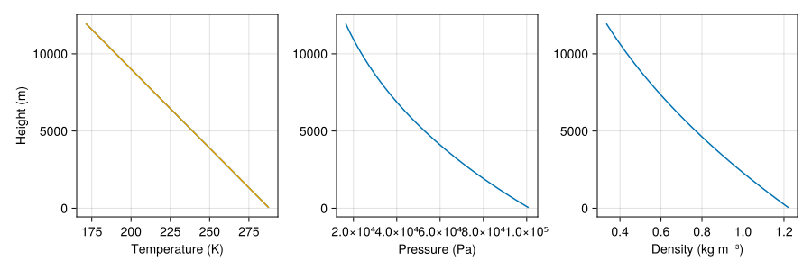

Atmosphere Thermodynamics
Breeze implements thermodynamic relations for moist atmospheres –- fluids that can be described as a binary mixture of (i) "dry" air, and (ii) vapor, as well as liquid and solid condensates of the vapor component of various shapes and sizes.
On Earth, dry air is itself a mixture of gases, the vapor component is $\mathrm{H_2 O}$, and the condensates comprise clouds and precipitation such as rain, snow, hail, and grapuel. Breeze models dry air as having a fixed composition with constant molar mass. Dry air on Earth's is mostly nitrogen, oxygen, and argon.
Two laws for ideal gases
Both dry air and vapor are modeled as ideal gases, which means that the ideal gas law relates pressure $p$, temperature $T$, and density $ρ$,
\[p = ρ R T .\]
Above, $R = ℛ / m$ is the specific gas constant given the molar gas constant $ℛ ≈ 8.31 J / K / \mathrm{mol}$ and molar mass $m$ of the gas species under consideration.
The first law of thermodynamics applied to dry air, a.k.a. "conservation of energy", states that infinitesimal changes in internal energy $\mathrm{d} ê$ are related to infinestimal changes in temperature $\mathrm{d} T$ and pressure $\mathrm{d} p$ according to
\[\mathrm{d} ê = cᵖᵈ \mathrm{d} T - \frac{\mathrm{d} p}{\rho}\]
where $cᵖᵈ$ is the specific heat capacity of dry air at constant pressure.
For example, to represent dry air typical for Earth, with $m = 0.029$ and $c^p = 1005$, we write
using Breeze.Thermodynamics: IdealGas
dry_air = IdealGas(molar_mass=0.029, heat_capacity=1005)IdealGas{Float64}(molar_mass=0.029, heat_capacity=1005.0)Adiabatic transformations and potential temperature, $θ$
Within adiabatic transformations, $\mathrm{d} ê = 0$. Combining the ideal gas law with conservation of energy then yields
\[\frac{\mathrm{d} p}{\mathrm{d} T} = ρ cᵖᵈ = \frac{p}{R T} cᵖ \qquad \text{which implies} \qquad T ∼ \left ( \frac{p}{p₀} \right )^{R / cᵖ} .\]
where $p₀$ is some reference pressure. As a result, the potential temperature
\[θ ≡ T \left ( \frac{p₀}{p} \right )^{Rᵈ / cᵖᵈ} ,\]
is constant under adiabatic transformations, defined such that $θ(z=0) = T(z=0)$.
Hydrostatic balance
Next we consider a reference state with constant internal energy and thus constant potential temperature
\[θ₀ = Tᵣ \left ( \frac{p₀}{pᵣ} \right )^{Rᵈ / cᵖᵈ}\]
Subscripts $0$ typically indicate evaluated values. For example, in the above formula, $p₀ ≡ pᵣ(z=0)$. Subscripts $r$ indicate reference states, which typically are functions of $z$. This differs from the usual notation in which the subscripts $0$ indicate "reference" (why?) and the "very referencey" $00$ (lol) applies to $z=0$.
Hydrostatic balance requires
\[∂_z pᵣ = - ρᵣ g\]
we get
\[\frac{pᵣ}{p₀} = \left (1 - \frac{g z}{cᵖ θ₀} \right )^(cᵖᵈ / Rᵈ)\]
Thus
\[Tᵣ(z) = θ₀ \left ( \frac{pᵣ}{p₀} \right )^{Rᵈ / cᵖ} = θ₀ \left ( 1 - \frac{g z}{cᵖᵈ θ₀} \right )\]
and
\[ρᵣ(z) = \frac{p₀}{R θ₀} \left ( 1 - \frac{g z}{cᵖ θ₀} \right )^{cᵖᵈ / Rᵈ - 1}\]
thermo = AtmosphereThermodynamics()AtmosphereThermodynamics{Float64}:
├── molar_gas_constant: 8.314462618
├── gravitational_acceleration: 9.81
├── energy_reference_temperature: 273.16
├── triple_point_temperature: 273.16
├── triple_point_pressure: 611.657
├── dry_air: IdealGas{Float64}(molar_mass=0.02897, heat_capacity=1005.0)
├── vapor: IdealGas{Float64}(molar_mass=0.018015, heat_capacity=1850.0)
├── liquid: CondensedPhase{Float64}(latent_heat=2.5008e6, heat_capacity=4181.0)
└── solid: CondensedPhase{Float64}(latent_heat=2.834e6, heat_capacity=2108.0)We can visualise the hydrostatic reference column implied by thermo by evaluating Breeze's reference-state utilities on a one-dimensional RectilinearGrid. Using Oceananigans Fields highlights how Breeze stores and accesses these background diagnostics.
using Breeze
using Breeze.Thermodynamics: reference_pressure, reference_density
using CairoMakie
thermo = AtmosphereThermodynamics()
constants = ReferenceStateConstants(base_pressure=101325, potential_temperature=288)
grid = RectilinearGrid(size=160, z=(1, 12_000), topology=(Flat, Flat, Bounded))
pᵣ = CenterField(grid)
ρᵣ = CenterField(grid)
set!(pᵣ, z -> reference_pressure(z, constants, thermo))
set!(ρᵣ, z -> reference_density(z, constants, thermo))
Rᵈ = Breeze.Thermodynamics.dry_air_gas_constant(thermo)
cᵖᵈ = thermo.dry_air.heat_capacity
p₀ = constants.base_pressure
θ₀ = constants.reference_potential_temperature
g = thermo.gravitational_acceleration
# Verify that Tᵣ = θ₀ (1 - g z / (cᵖᵈ θ₀))
z = KernelFunctionOperation{Center, Center, Center}(znode, grid, Center(), Center(), Center())
Tᵣ₁ = Field(θ₀ * (pᵣ / p₀)^(Rᵈ / cᵖᵈ))
Tᵣ₂ = Field(θ₀ * (1 - g * z / (cᵖᵈ * θ₀)))
fig = Figure(resolution = (900, 300))
axT = Axis(fig[1, 1]; xlabel = "Temperature (K)", ylabel = "Height (m)")
lines!(axT, Tᵣ₁)
lines!(axT, Tᵣ₂)
axp = Axis(fig[1, 2]; xlabel = "Pressure (Pa)", ylabel = "")
lines!(axp, pᵣ)
axρ = Axis(fig[1, 3]; xlabel = "Density (kg m⁻³)", ylabel = "")
lines!(axρ, ρᵣ)
fig
Thermodynamic relations for gaseous mixtures
of gaseous dry air, water vapor, and liquid and solid condensates of various shapes and sizes. We assume that the volume of the condensates is negligible, which means that the total pressure is the sum of partial pressures of vapor and dry air,
\[p = pᵈ + pᵛ .\]
The partial pressure of the dry air and vapor components are related to the component densities $ρᵈ$ and $ρᵛ$ through the ideal gas law,
\[pᵈ = ρᵈ Rᵈ T \qquad \text{and} \qquad pᵛ = ρᵛ Rᵛ T\]
where $T$ is temperature, $Rⁱ = ℛ / m^β$ is the specific gas constant for component $β$, $ℛ$ is the molar or "universal" gas constant, and $m^β$ is the molar mass of component $β$.
Central to Breeze's implementation of moist thermodynamics is a struct that holds parameters like the molar gas constant and molar masses,
thermo = AtmosphereThermodynamics()AtmosphereThermodynamics{Float64}:
├── molar_gas_constant: 8.314462618
├── gravitational_acceleration: 9.81
├── energy_reference_temperature: 273.16
├── triple_point_temperature: 273.16
├── triple_point_pressure: 611.657
├── dry_air: IdealGas{Float64}(molar_mass=0.02897, heat_capacity=1005.0)
├── vapor: IdealGas{Float64}(molar_mass=0.018015, heat_capacity=1850.0)
├── liquid: CondensedPhase{Float64}(latent_heat=2.5008e6, heat_capacity=4181.0)
└── solid: CondensedPhase{Float64}(latent_heat=2.834e6, heat_capacity=2108.0)The default parameter evince basic facts about water vapor air typical to Earth's atmosphere: for example, the molar masses of dry air (itself a mixture of mostly nitrogen, oxygen, and argon), and water vapor are $mᵈ = 0.029$ kg/mol and $mᵛ = 0.018$ kg/mol.
To write the effective gas law for moist air, we introduce the mass ratios
\[qᵈ \equiv \frac{ρᵈ}{ρ} \qquad \text{and \qquad qᵛ \equiv \frac{ρᵛ}{ρ}\]
where $ρ$ is total density of the fluid including dry air, vapor, and condensates, $ρᵈ$ is the density of dry air, and $ρᵛ$ is the density of vapor. It's then convenient to introduce the "mixture" gas constant $Rᵐ(qᵛ)$ such that
\[p = ρ Rᵐ T \qquad \mathrm{where} \qquad Rᵐ ≡ qᵈ Rᵈ + qᵛ Rᵛ .\]
In "clear" (not cloudy) air, we have that $qᵈ = 1 - qᵛ$. More generally, $qᵈ = 1 - qᵛ - qᶜ$, where $qᶜ$ is the total mass ratio of condensed species. In most situations on Earth, $qᶜ ≪ qᵛ$.
# Compute mixture properties for air with 0.01 specific humidity
qᵛ = 0.01 # 1% water vapor by mass
Rᵐ = mixture_gas_constant(qᵛ, thermo)288.7477814111527We likewise define a mixture heat capacity via $cᵖᵐ = qᵈ cᵖᵈ + qᵛ cᵖᵛ$,
q = 0.01 # 1% water vapor by mass
cᵖᵐ = mixture_heat_capacity(qᵛ, thermo)1013.45The Clasuius-Claperyon relation and saturation specific humidity
The Clausius-Claperyon relation for an ideal gas
\[\frac{\mathrm{d} pᵛ}{\mathrm{d} T} = \frac{pᵛ ℒ^β(T)}{Rᵛ T^2}\]
where $pᵛ$ is vapor pressure, $T$ is temperature, $Rᵛ$ is the specific gas constant for vapor, $ℒ^β(T)$ is the latent heat of the transition from vapor to the $β$ phase (e.g. $l ≡ β$ for vapor → liquid and $i ≡ β$ for vapor to ice).
For a thermodynamic formulation that uses constant (i.e. temperature-independent) specific heats, the latent heat of a phase transition is linear in temperature. For example, for phase change from vapor to liquid,
\[ℒˡ(T) = ℒˡ₀ + \big ( \underbrace{cᵖᵛ - cˡ}{≡Δcˡ} \big ) T\]
where $ℒˡ₀$ is the latent heat at $T = 0$, with $T$ in Kelvin. Integrate that to get
\[pᵛ^\dagger(T) = pᵗʳ \left ( \frac{T}{Tᵗʳ} \right )^{Δcˡ / Rᵛ} \exp \left \{ \frac{ℒˡ₀}{Rᵛ} \left (\frac{1}{Tᵗʳ} - \frac{1}{T} \right ) \right \}\]
Consider parameters for liquid water,
using Breeze.Thermodynamics: CondensedPhase
liquid_water = CondensedPhase(latent_heat=2500800, heat_capacity=4181)CondensedPhase{Float64}(latent_heat=2.5008e6, heat_capacity=4181.0)or water ice,
water_ice = CondensedPhase(latent_heat=2834000, heat_capacity=2108)CondensedPhase{Float64}(latent_heat=2.834e6, heat_capacity=2108.0)